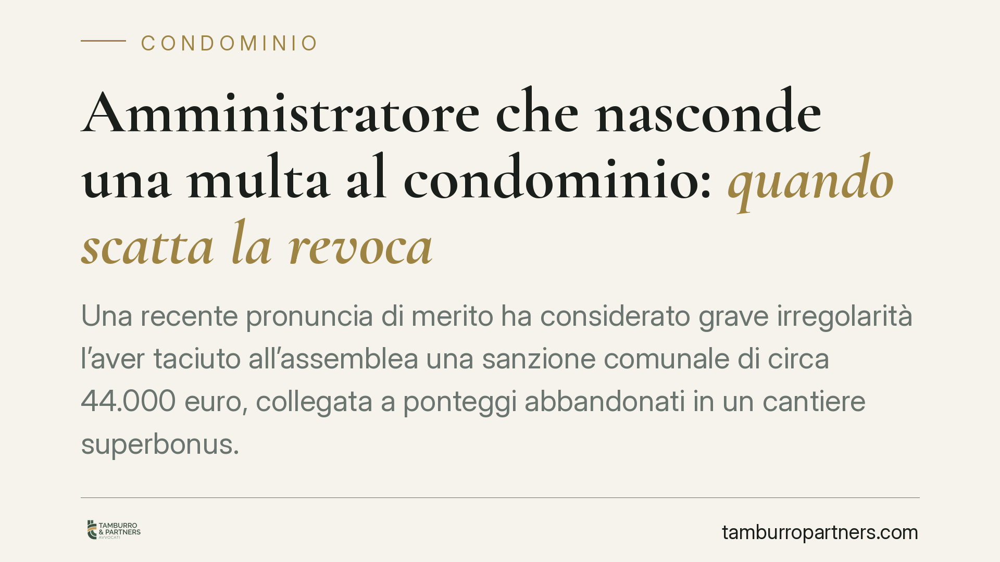

Amministratore che nasconde una multa al condominio: quando scatta la revoca
Una recente pronuncia di merito ha considerato grave irregolarità l'aver taciuto all'assemblea una sanzione comunale di circa 44.000 euro, collegata a ponteggi abbandonati in un cantiere superbonus. La decisione riapre il tema dei doveri informativi dell'amministratore e dei presupposti della revoca giudiziale ex art. 1129 del codice civile.

Il caso
Un condominio genovese aveva avviato lavori con superbonus. L'impresa appaltatrice lascia i ponteggi montati e inutilizzati oltre il consentito; il Comune irroga una sanzione amministrativa di circa 44.000 euro.
Il punto critico non è la multa in sé, ma il silenzio: l'amministratore non informa tempestivamente l'assemblea. I condòmini apprendono dell'esposizione economica quando ormai i margini di reazione si sono ridotti. Da qui la richiesta di revoca giudiziale.
La pronuncia richiamata è una decisione di merito. Non ne risultano pubblicati estremi completi (sezione, numero, data): la trattiamo quindi come indicazione di orientamento, non come precedente puntualmente verificabile.
Inquadramento normativo
L'art. 1129 del codice civile disciplina nomina, obblighi e revoca dell'amministratore. Il comma 12 elenca una serie di gravi irregolarità tipizzate: tra queste la mancata convocazione dell'assemblea per l'approvazione del rendiconto, la mancata apertura o utilizzo del conto corrente intestato al condominio, la gestione confusa dei fondi, l'omesso rendiconto.
È importante essere precisi. L'omessa comunicazione di un'informazione rilevante sulla gestione non è testualmente elencata tra le ipotesi del comma 12. La revoca, in casi come quello descritto, poggia sulla clausola generale di "grave irregolarità": l'elenco del comma 12 è ritenuto dalla giurisprudenza non tassativo, con la conseguenza che il giudice può valorizzare condotte ulteriori, purché di gravità comparabile a quelle tipizzate.
Il fondamento sostanziale sta nell'obbligo di diligenza e trasparenza che grava sull'amministratore quale mandatario dei condòmini (artt. 1710 e 1129 c.c.). Nascondere un'esposizione da decine di migliaia di euro incide direttamente sulla possibilità dell'assemblea di deliberare in modo informato: impugnare la sanzione, agire in rivalsa verso l'impresa, valutare le coperture assicurative.
Un dato tecnico va tenuto fermo: la revoca giudiziale ex art. 1129 c.c. non richiede una previa delibera assembleare. Ciascun condòmino può ricorrere direttamente al tribunale in presenza di gravi irregolarità. È una tutela individuale, non condizionata alla volontà della maggioranza.
Implicazioni pratiche
Per i condòmini, la lettura è duplice. Da un lato, il dovere informativo dell'amministratore ha un contenuto ampio: non riguarda solo i rendiconti periodici, ma ogni fatto idoneo a incidere in modo significativo sul patrimonio comune. Dall'altro, la clausola generale di grave irregolarità offre uno spazio di tutela anche quando la condotta non rientra nell'elenco tipizzato.
Per l'amministratore, il messaggio è chiaro: la tempestività della comunicazione è essa stessa oggetto di valutazione. Non basta riferire; occorre riferire in tempo utile perché l'assemblea possa reagire.
Sul versante della sanzione amministrativa, il tema dei termini è decisivo. Se si tratta di sanzione irrogata dal Comune, la reazione tipica è l'opposizione al giudice competente ai sensi dell'art. 22 della legge 689/1981, di regola entro 30 giorni dalla notifica dell'ordinanza-ingiunzione, con le variabili previste dalla normativa di settore. Il silenzio dell'amministratore, protraendosi, può bruciare proprio questi termini, aggravando il danno.
Cosa fare in concreto
- Verificate la tracciabilità delle comunicazioni. Richiedete all'amministratore evidenza documentale di ogni provvedimento sanzionatorio o contenzioso che coinvolga il condominio.
- Controllate i termini di impugnazione. Se emerge una sanzione, accertate subito la data di notifica e il termine per l'opposizione ex art. 22 L. 689/1981, così da non pregiudicare la difesa.
- Ricostruite la catena di responsabilità. In presenza di lavori appaltati, valutate l'azione di rivalsa verso l'impresa e la posizione delle coperture assicurative.
- Valutate la revoca giudiziale. In caso di grave irregolarità, il singolo condòmino può ricorrere al tribunale senza attendere una delibera assembleare. È opportuna una valutazione tecnica preliminare sui presupposti.
- Documentate tutto per iscritto. Diffide, richieste di chiarimenti e verbali costituiscono la base probatoria di un eventuale giudizio.
---
Contributo informativo a cura di Tamburro & Partners - Avv. Giuseppe Tamburro. Non costituisce parere legale.
Ogni condominio ha una storia a sé.
Se gestisci un'amministrazione e vuoi un confronto su una specifica questione condominiale, scrivi allo studio. Ti rispondiamo entro un giorno lavorativo.